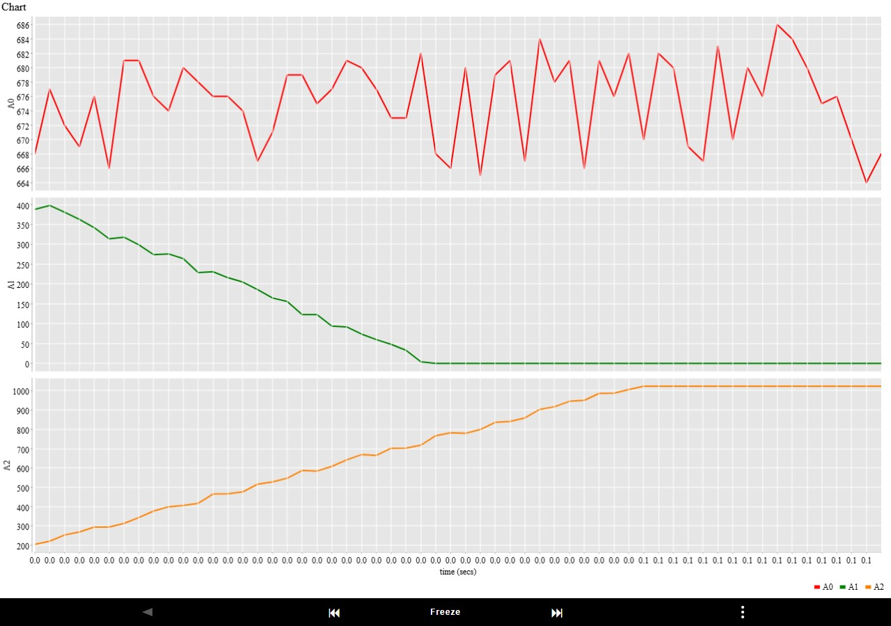
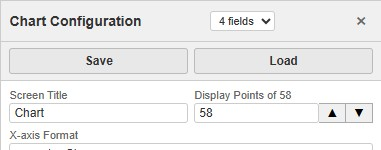
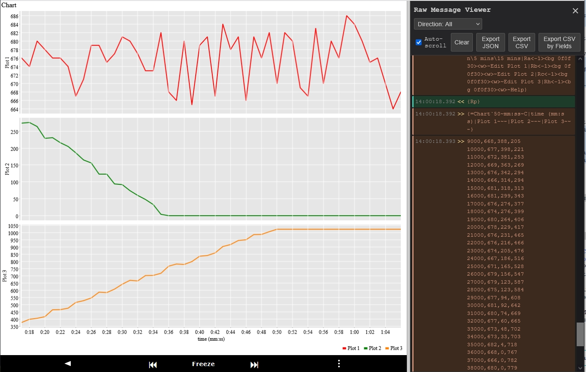
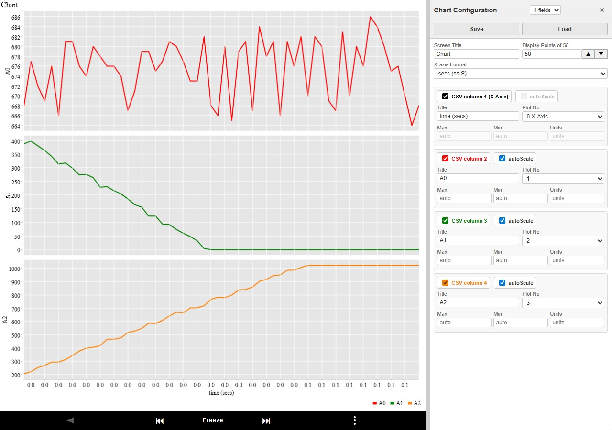
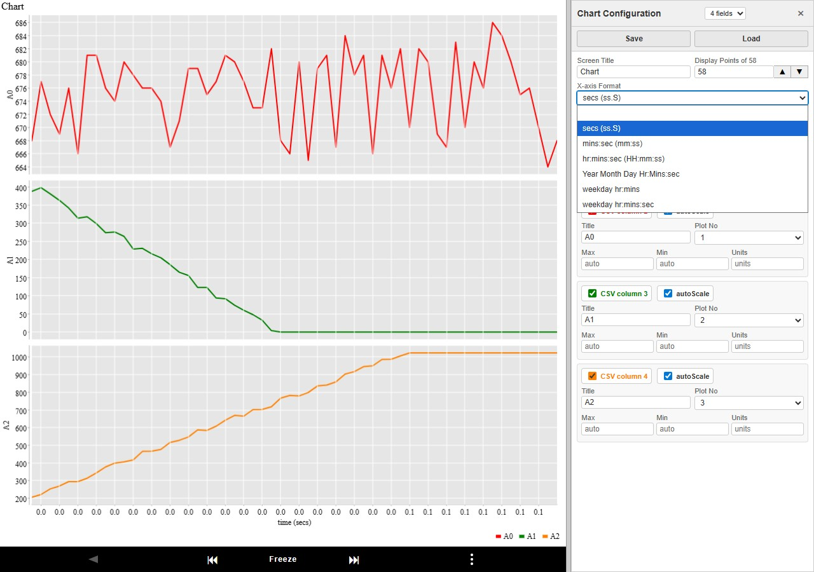
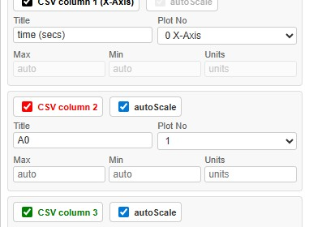

pfodWeb — Chart Mode User Guide
This guide covers three key features available when pfodWeb is displaying a chart: the Freeze controls, the Raw Message viewer, and the Chart Configuration panel.

1. Freeze / Unfreeze
While the chart is updating live, the Freeze button locks the display so you can inspect a specific moment in time. When frozen, two arrow buttons let you scroll backward and forward through the collected data without losing any data.
Toolbar Buttons
| Button | What it does |
|---|
| Freeze / Freeze | Freezes the chart at the current display window. The button turns red to show frozen state. Live data continues to be collected in the background. |
| ⏮ | Step back — shifts the display window back by 40% of the current Display Points setting. For example, with Display Points = 100 each press moves back 40 rows. Only enabled when frozen. |
| ⏭ | Step forward — shifts the display window forward by 40% of the current Display Points setting. For example, with Display Points = 100 each press moves forward 40 rows. Only enabled when frozen. |
How to Use Freeze
- While the chart is running live, click Freeze. The chart stops scrolling and the Freeze button turns red.
- Use ⏮ and ⏭ to scroll through earlier or later data in 40%-window steps.
- Click Freeze again to unfreeze. The chart immediately returns to the live view with auto-scaling axes.
Note: Freezing does not stop data collection. All incoming data is still recorded — you simply stop following the newest data on screen.
Zooming the X-Axis with Display Points

Display Points, in the Chart Configuration side panel, controls how many CSV data rows are shown in the display window at one time. When the chart is frozen this becomes a powerful X-axis zoom control:
- Decrease Display Points → fewer rows displayed → the X-axis spans a shorter time range → you are zoomed in.
- Increase Display Points → more rows displayed → the X-axis spans a longer time range → you are zoomed out.
The Display Points field in Chart Configuration has two buttons to the right for quick zooming:
- ▲ — doubles the current Display Points value and immediately applies the change (zoom out).
- ▼ — halves the current Display Points value and immediately applies the change (zoom in).
When the display window is frozen, changing Display Points keeps the centre of the current window constant — so the region you were looking at stays centred after zooming. You can also type a value directly and press Enter. Use ⏮ and ⏭ to scroll after zooming.
Tip: A good workflow is to freeze first, then click ▼ repeatedly to zoom in, using ⏮ ⏭ to pan. Click ▲ to zoom back out. Each ⏮ ⏭ press moves 40% of the current Display Points, so the current view centre stays visible after scrolling.
2. Raw Message Viewer
The Raw Message Viewer shows every message sent to and received from the connected device. It is useful for diagnosing communication issues and for exporting raw data.
Opening the Viewer
- Click the ⋮ button at the bottom right of the chart area to open the menu, then choose Raw Message Viewer.

The Raw Message Panel
The panel slides in from the right side. Each row shows:
| Column | Description |
|---|
| Time | Time the message was recorded (HH:MM:SS) |
| Direction | << — message sent to device | >> — message received from device |
| Message | Raw message content |

Controls
| Button | Action |
|---|
| Clear | Remove all messages from the display. |
| Export JSON | Download all messages as a JSON file. Each record contains timestamp, ms (milliseconds since first message), direction, and message. |
| Export CSV | Download all messages as a CSV file with the same four columns. The ms column makes it easy to calculate elapsed time between messages. |
| Export CSV by Fields | Download one CSV file per field count (e.g. a separate file for 3-field data and 6-field data). No timestamps are included — just the raw CSV values. Useful for importing directly into a spreadsheet or other tools. |
Tip: The Export CSV by Fields button is the easiest way to get your sensor data into a spreadsheet. Each file is named pfod-csv-Nfields-timestamp.csv.
Closing the Viewer
Click the ✕ button at the top right of the panel.
3. Chart Configuration
Chart Configuration lets you customise how the chart looks — field titles, which subplot each field appears on, Y-axis limits, and the X-axis time format. Changes are applied by pressing Enter, moving to another field, or after 5 seconds. Configurations can be saved and loaded as files.
Opening Chart Configuration
- Click the ⋮ button at the bottom right of the chart area to open the menu, then choose Open Chart Configuration.

The Chart Configuration panel opens on the right side of the screen.

Header Controls
| Control | Purpose |
|---|
| Dataset dropdown | Shows the available CSV field counts (e.g. "3 fields", "6 fields"). Select a different count to switch the chart to that dataset with a default layout. |
| Save | Save the current configuration as a .Nfields file (e.g. chart.3fields). The filename is derived from the chart title. |
| Load | Load a previously saved .Nfields file. The file picker is filtered to match the current field count. Loading automatically applies the configuration. |
Note: Save and Load are disabled when no CSV data has been collected yet.
Chart-Level Settings

| Field | Description |
|---|
| Title | Chart title shown at the top of the chart. |
| Display Points of N | Number of CSV data rows to show in the display window at once (N = total rows available). Older rows scroll off as new ones arrive. Use the ▲ button to double and ▼ to halve the value — both immediately apply the change to the chart. |
| X-axis Format |
Dropdown controlling how the X-axis values are formatted:
(blank) — No formatting, values shown as-is
secs (ss.S) — Elapsed seconds with one decimal (e.g. 12.3)
mins:sec (mm:ss) — Minutes and seconds (e.g. 2:05)
hr:mins:sec (HH:mm:ss) — Hours, minutes and seconds (e.g. 01:02:05)
Year Month Day Hr:Mins:sec (unix sec) — Full date/time from a Unix timestamp (seconds)
weekday hr:mins (unix secs) — Weekday and time from a Unix timestamp (e.g. Mon 14:30)
weekday hr:mins:sec (unix secs) — Weekday, hours, minutes and seconds from a Unix timestamp (e.g. Mon 14:30:05)
|
Field Settings
Each CSV column has its own block. The CSV column label and tick box are shown in the same colour as the plot line for that field, making it easy to identify which field maps to which line.

Tick box (Include)
Check the box to include the field in the plot. Uncheck to exclude it (the field's settings are dimmed and it will not appear in the chart).
Row 1 — Title, autoScale and Plot No
| Input | Description |
|---|
| Title | Label shown in the chart legend for this field. |
| autoScale | When ticked, autoScale will expand any specified max/min to display all the data. |
| Plot No |
Dropdown controlling where this field appears:
0 X-Axis — Use this field as the X-axis
1, 2, 3 … — Subplot number for the Y data
Multiple fields with the same Plot No share the same subplot.
If no field is set to 0 X-Axis, the row count is used as the X-axis automatically.
Disabled when there is only one CSV field (row count is used as X-axis automatically).
|
Row 2 — Max, Min, Units
| Input | Description |
|---|
| Max | If not left as Auto, specifies the upper bound for the Y-axis. autoScale, if ticked, automatically expands this if data exceeds it. |
| Min | Same as Max but for the lower bound. |
| Units | Units label appended to the Y-axis. |
Note: Max and Min can be adjusted when autoScale is ticked. If autoScale is ticked, the scale will be at least Min to Max or larger if the data exceeds that range.
Workflow Example — Splitting Fields onto Separate Subplots
- Open Chart Configuration.
- For data with multiple fields, the first field is automatically set as the X-axis (
0 X-Axis). To plot against record count instead, change its Plot No to a non-zero subplot number.
- Set field 2 Plot No to
1.
- Set field 3 Plot No to
2 to put it on its own subplot.
- Set field 4 Plot No to
3 to put it on its own subplot.
- Set Max and Min for each subplot if you want to restrict the Y scale when autoScale is un-ticked OR if you want to expand the current autoScaling.
- Press Enter or move to another field. Otherwise the chart will automatically update after 5 seconds.
- Click Save to save this layout for next time.
Save and Load Configuration Files
Configurations are saved as plain-text pfod plot command files with a .Nfields extension (e.g. MyChart.4fields for a 4-field dataset). This lets the file picker automatically filter to show only files compatible with the current data.
- Click Save — the browser downloads the file. The filename is based on the chart title.
- Click Load — a file picker opens filtered to
.Nfields files matching the current field count. Selecting a file loads and immediately applies it.
Note: The Chart Configuration panel auto-refreshes if it is open when a new plot command arrives from the device.
Bookmarking the Current Chart Configuration
Every time you change a field or load a configuration file, pfodWeb automatically updates the page URL with a ?chart=… parameter containing the current plot command. You can bookmark this URL to restore the same chart configuration in a future session.
Opening a bookmarked URL shows the Connection Setup screen with Chart Only mode enabled. After connecting, the saved chart configuration is applied automatically — no need to re-open Chart Configuration.
Tip: After setting up the chart exactly as you want it, bookmark the page URL. The bookmark captures the protocol, connection settings, and full chart configuration in one link.